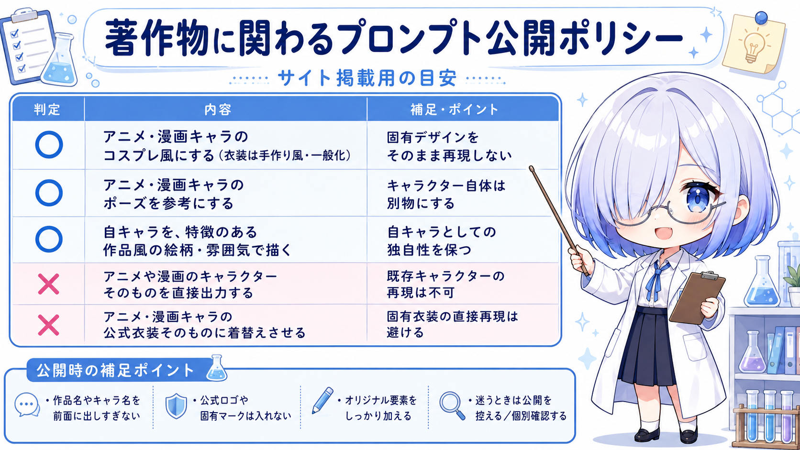

How to use
活用ガイド
掲載されているメモやプロンプトは、完成品をそのまま出すためだけのものではありません。あなたの環境や発想に合わせて、自由に足して楽しむためのアイデア集です。
1
記事カードを選ぶ
気になるカテゴリや検索から記事を探し、カードをクリックすると右側に詳細が表示されます。タイトル・概要・使いどころを見て、使いたい方向性を選びます。
2
プロンプトをコピーする
日本語プロンプトや英語プロンプトをコピーして、ChatGPT Images、Gemini、Midjourneyなどの画像生成サービスに貼り付けて使います。
3
キーワードを追加して調整する
用意されたプロンプトは、SNSで見かけるような「すぐ完成品になる文章」だけではありません。+αの演出や効果を与える素材として使えるものもあります。
4
環境ごとの変化を楽しむ
出力結果は、使用する生成環境、モデル、設定、メモリ、添付する立ち絵や三面図によって変わります。違いも含めて創作の幅として楽しんでください。
このサイトの使い方のコツ
- サイト内のサンプルは、立ち絵や三面図にプロンプトを組み合わせて作成されています。
- プロンプトはそのまま使うだけでなく、キャラクター名、衣装、場所、時間帯、光、カメラ演出などを足すと使いやすくなります。
- 「構図」「色」「効果」「動画化メモ」など、欲しい要素だけを抜き出して別のプロンプトへ混ぜる使い方もおすすめです。
- 同じ文章でも環境によって違う結果になるため、出力の揺れもアイデア探しとして楽しんでください。
Publishing Policy
著作物に関わるプロンプトの公開ポリシー
このサイトでは、既存作品や既存キャラクターを直接再現するプロンプトは掲載しません。自分のキャラクターやオリジナル要素を中心に、参考・雰囲気・ポーズ・衣装アレンジとして活用できる内容を掲載します。

サイト掲載用の公開ポリシー目安